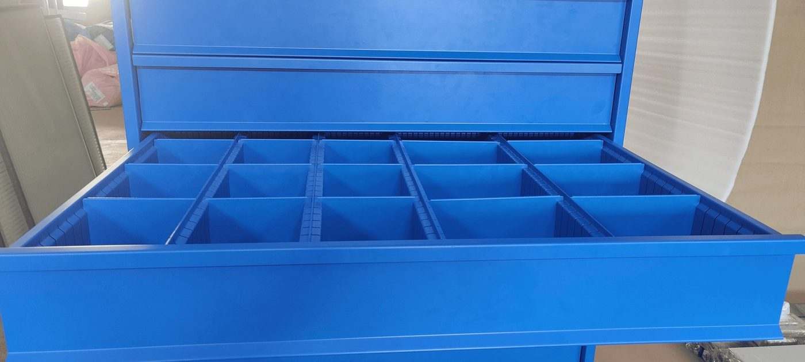
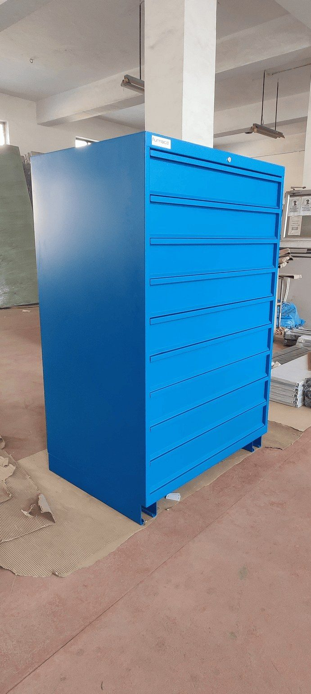

- Industry
- Automotive components (mechatronics)
- Application area
- Component storage
- Furnisys systems
- Base Cabinet with drawer partitions
- Engagement
- Product configuration and after-sales service
Thousands of small parts that must not get mixed
Situation
The client makes switches, HMI control units, drive authorisation systems, e-mobility products, sensors and pumps for automotive and industrial use. Their stores hold a wide range of small, sensitive parts, from temperature sensors and PCBs to crimp connectors and rocker switches.
A distant supplier and a need for order
The challenge
Their existing cabinets came from a supplier far from the plant, and transport costs had become a problem, so they wanted a nearby vendor. We gathered cabinet dimensions, drawer counts and a detailed inventory. With so many sensor parts and small components, partitions inside every drawer were essential for segregation and quick identification.
How do you store hundreds of part types so anyone can find them?
The question
How do you organise sensitive electronic and mechanical parts in one cabinet, leave room for new part numbers, and still move the cabinet easily when the layout changes?
Partitioned drawers and a base built for moving
The Furnisys approach
1. Nine-drawer base cabinet with compartments
Each of the nine drawers was fitted with compartments for segregated storage. We added 50 extra compartments so the client can create new divisions as their parts list grows. Dividers adjust or come out completely.

2. Fork-truck base
A fork-truck base under the cabinet lets the whole unit be lifted and moved safely with a forklift during layout changes.

What it stores
- Electronics: temperature, pressure, proximity, optical and humidity sensors; main control and HMI PCBs; microcontrollers and ICs
- Mechanical: solenoid, linear, rotary and pneumatic actuators; gears, pulleys, springs, seals and gaskets
- Wiring: signal and power cables, terminal blocks, crimp, ribbon and plug-in connectors
- Switches and HMI: rocker, pushbutton, toggle and snap-action switches, knobs, sliders and touch panels
- Hardware: fasteners, clips, clamps, PCB mounts and standoffs
Order inside the drawer, mobility outside it
How the setup works together
Partitions keep each part type in its own place, so picking is faster and mistakes are fewer. The spare compartments absorb new part numbers without rework, and the fork-truck base makes the cabinet as easy to relocate as a pallet.
What the client received
What the configuration enabled
- Segregated, labelled storage for sensitive and small components
- 50 spare compartments for future part numbers
- Safe forklift handling during relocation
- A nearby supplier with after-sales support
Start from the inventory
Furnisys perspective
The client's parts list shaped this cabinet more than any catalogue page. Drawer heights and partitions follow what goes inside them.
Frequently asked questions
How many compartments can a drawer cabinet hold?
It depends on drawer size and part dimensions. Here nine drawers were partitioned, with 50 extra compartments supplied for future use.
Why add a fork-truck base to a cabinet?
It lets a loaded cabinet be moved safely with a forklift during layout changes, without emptying it.
Are drawer partitions adjustable?
Yes. The dividers can be repositioned or removed as storage needs change.